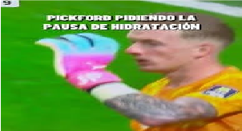

¿Qué es la pausa de hidratación?
La pausa de hidratación en el fútbol dura exactamente 3 minutos de silbato a silbato y se realiza dos veces por partido reglamentario.
Beneficios para la salud
La pausa de hidratación sirve para proteger la salud de los deportistas durante el partido de alta intensidad. Permite bajar la temperatura del cuerpo, reponer líquidos y electrolitos, prevenir golpes de calor y retrasar la fatiga física.
¿Qué ocurre si no se realiza?
En contextos de alta exigencia física y calor, el cuerpo sufre un aumento rápido de la temperatura interna y una pérdida excesiva de líquidos. Esto provoca fatiga prematura, calambres musculares y una caída en el rendimiento físico y mental.

Nuestra opinión
En nuestra opinión, la pausa de hidratación es muy importante para cuidar la salud de los jugadores y para prevenir lesiones graves y calambres musculares.